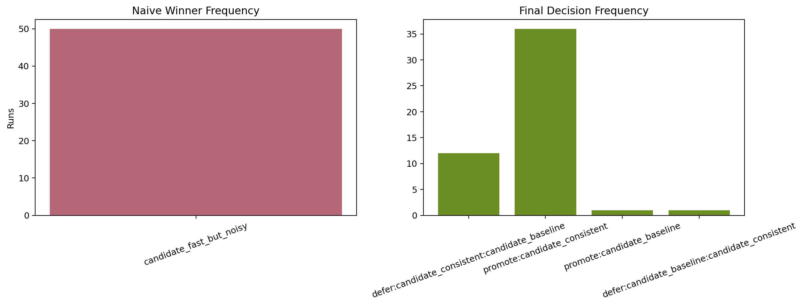
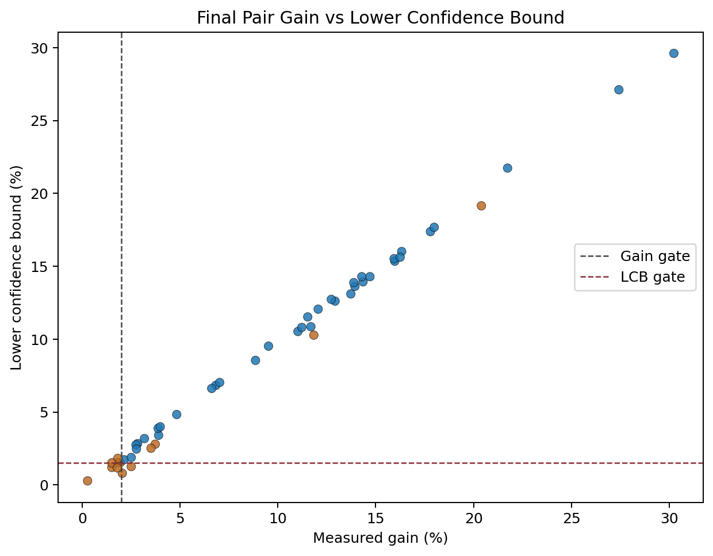
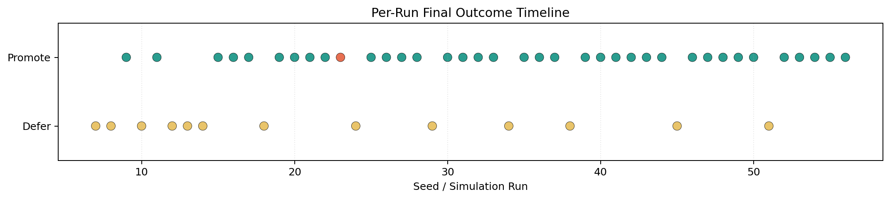

Noise-Aware Kernel Benchmarking Demo Packet
Package goal. This folder packages the current prototype, technical documentation, architecture diagrams, GPU migration notes, and simulation outputs for the patent-centered control loop: telemetry-derived contamination detection, pairwise ambiguity-guided rerun allocation, and confidence-gated promotion.
Workspace path: C:\Users\ManishKL\Documents\Playground\kernel_noise_prototype
Open First
Key Findings
Short results page with the latest plots and summary conclusions.
Technical Spec
Implementation-oriented description of modules, telemetry, thresholds, artifacts, and current behavior.
Architecture
Detailed diagrams for component architecture, runtime sequence, and state transitions.
Run Artifacts
Latest Single Run
Single-run benchmark report with finalist analysis and decision output.
Simulation Summary
Batch simulation report covering repeated sessions and aggregate behavior.
GPU Run Checklist
Step-by-step path for moving the prototype to a Triton/CUDA machine.
Plots



Source Files
Core logic
engine.pydemo.pysimulate_results.py
GPU integration
triton_adapter.pysetup_gpu.pyrequirements-gpu.txt
This now includes a small generated matmul variant layer via --candidate-mode generated.
Real kernels included
triton_tutorials/03-matrix-multiplication.pytriton_tutorials/02-fused-softmax.py